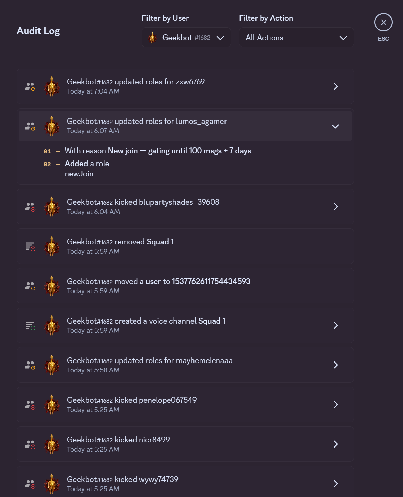
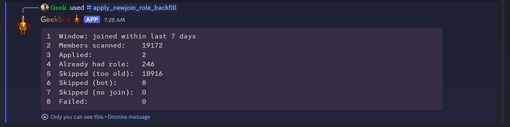
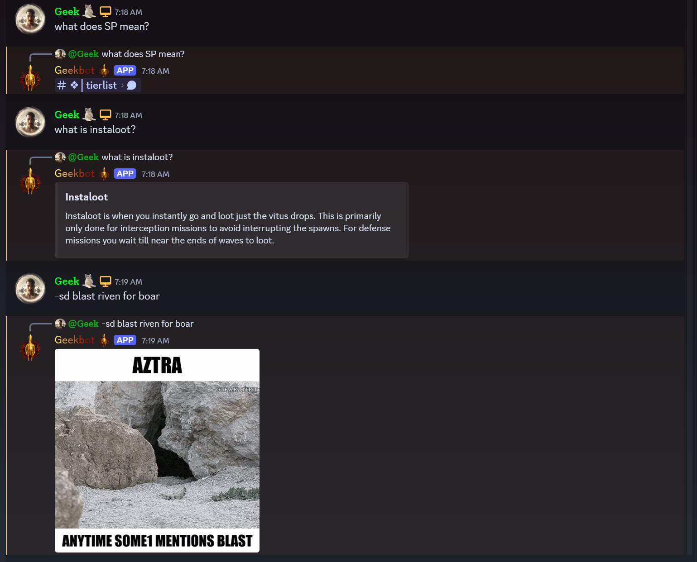
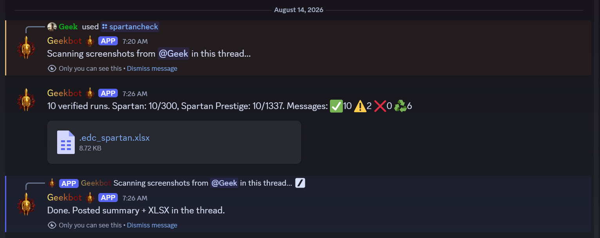
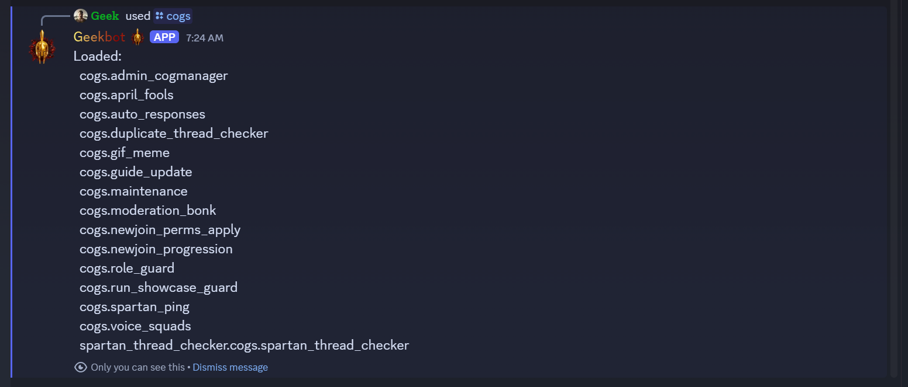

Geekbot Privileged Intent Evidence
Geekbot requests only the privileged data needed by its implemented features: Server Members for automated onboarding and complete member safety checks, and Message Content for configured responses and thread analysis. Geekbot does not request or process Presence data.
Server Members Intent
Geekbot receives member-join events and immediately applies the server's restricted newJoin role. This closes the moderation gap that would exist if onboarding depended on the new member running a command.

Geekbot also needs a complete guild member list for startup recovery and the hourly safety pass. The administrator-only backfill below scanned all 19,172 members, applied the role to two missed recent joiners, recognized 246 members who already had it, skipped bots and older members, and completed with zero failures.

Message Content Intent
Geekbot answers configured Warframe community questions posted as ordinary messages without requiring a bot mention or command. It also generates a requested meme from a configured text trigger.

The moderator-only /spartancheck workflow reads image attachments in the current thread, validates Warframe run evidence, detects duplicates, posts a summary, and generates a spreadsheet for staff review.

Application overview
The owner-only /cogs command shows the unified bot's loaded moderation, onboarding, validation, media, guide, and voice-channel extensions.

As a standard Gateway feature, Geekbot also creates a temporary private Squad voice channel when a member joins the configured creator channel, moves that member into it, and deletes the empty channel after the member leaves.